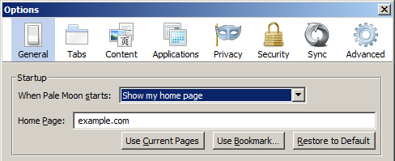
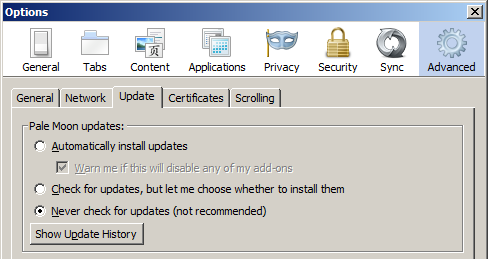

Volver al Inicio
Volver a Palemoon
Después de configurar Pale Moon de acuerdo con esta guía, su calificación cambia así:
Lo primero que debes hacer luego de haber descargado Pale Moon, es desconectarte de internet. Luego instala el navegador y cambia la página de inicio a algo más. En el diálogo de opciones:
El siguiente paso es deshabilitar el chequeo de actualizaciones, puedes hacerlo así:
Finalmente, deberías establecer las siguientes opciones en about:config:
| Función Spyware | Opción de about:config | Valor de la opción |
|---|---|---|
| Bloqueo de Addons | extensions.blocklist.enabled | false |
| Consulta OCSP | services.sync.prefs.sync.security.OCSP.enabled | false |
| Consulta OCSP | security.OCSP.GET.enabled | false |
| Consulta OCSP | security.OCSP.require | false |
| Consulta OCSP | security.OCSP.enabled | 0 |
| Geolocalización | geo.enabled | false |
Si quieres editar este artículo, o contribuir con tu(s) propio(s) artículo(s), visítanos en el repositorio git de Codeberg. Todas las contribuciones deben estar bajo la licencia CC0 para ser aceptadas.